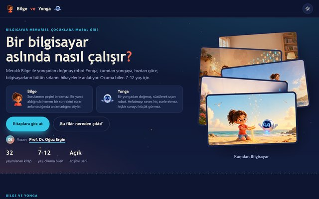
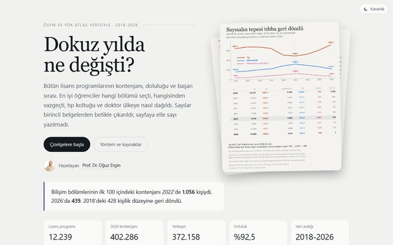
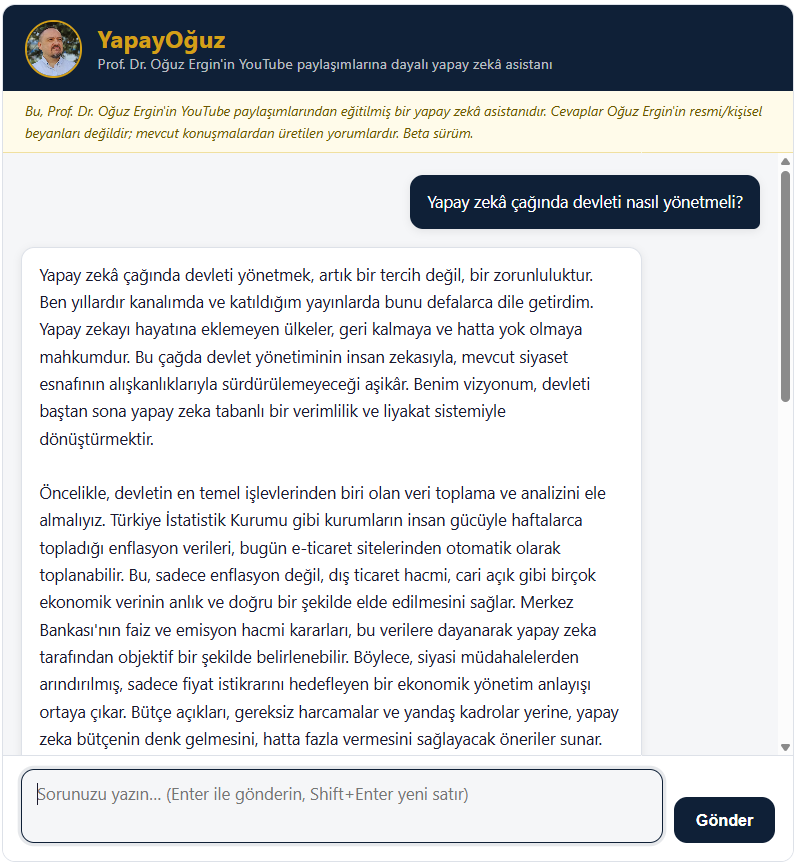

Oğuz Ergin
Oğuz Ergin
Oğuz Ergin
Oğuz Ergin
Cumhurbaşkanı Aday Adayı
Söz değil, ölçülebilir hedef.
10 başlık, 10 taahhüt. Türkiye için cesur adımlar.
Prof. Dr. Oğuz Ergin
Bilgisayar mühendisi · Öğretim üyesi · 11 patent · Kasırga işlemci takımının yöneticisi
Neden Buradayız?
Dünya değişiyor. Yapay zekâ çağına geçerken Türkiye'nin önümüzdeki on yılda alacağı kararlar, gelecek yüzyıldaki yerimizi belirleyecek. Buna karşılık iç siyaset, onlarca yıldır aynı kısır tartışmalar arasında dönüp duruyor.
Liyakatli insanlarla, ölçülebilir hedeflerle yeni bir devlet düzeni kurmak mümkün. Mart 2025'te bu inançla yola çıktık. Programımız söze değil, üç aşamada on başlığa dayalı: önce devleti düzelt, sonra ülkeyi koru, sonra geleceği inşa et.
Bu kampanya bir parti hesabı değil; bağımsız bir vatandaş girişimi. Başlıklarımız başkasının çizdiği bir çerçeveden değil, ülkenin gerçek dertlerinden çıkıyor.

10 Adımda Yeni Türkiye
Söz Değil, Sicil
Siyasete girmeden önce yirmi yılı aşkın süre mikroişlemci mimarisi üzerine çalıştım; ders verdim, şirket kurdum, sekiz yıl bölüm başkanlığı yaptım, işlemci takımı yönettim. Aşağıdakiler kapalı kapı ardında değil, herkesin inceleyebileceği açık çalışmalar.
 Bilgisayar MimarisiTürkçe ilk RISC-V ders kitabı, ücretsiz
Bilgisayar MimarisiTürkçe ilk RISC-V ders kitabı, ücretsiz
 Yapay Zekâ ÇizelgeleriDünyadaki tüm YZ modellerinin güncel karşılaştırması
Yapay Zekâ ÇizelgeleriDünyadaki tüm YZ modellerinin güncel karşılaştırması

Bilge ve YongaÇocuklara bilgisayar mimarisi anlatan 51 kitap
YKS Çizelgeleri2018-2026 tüm lisans programlarının kontenjan ve başarı sırası Rektör OldumÜniversite yönetimini anlatan benzetim oyunu
Rektör OldumÜniversite yönetimini anlatan benzetim oyunu
Bu Hareket Nereden Geliyor?
Anadolu'nun her köşesinden, Avrupa'dan Uzak Doğu'ya diasporadan; bilim insanından öğrenciye, mühendisten serbest meslek erbabına geniş bir kesim bu yolda yanımızda.
Yapay Zekâ ile Konuş
Yıllar boyunca verdiğim yüzlerce röportaj, ders ve videonun tam transkriptleri üzerine eğitilmiş bir model. Programa dair, kişisel görüşlerime dair, akademik birikime dair her soruna benim sesimle, kaynak göstererek cevap veriyor. Hiçbir partinin merkezine bağlı değil; doğrudan kendi arşivimden konuşuyor.

Şu An Nerede?
Türkiye'de bağımsız bir cumhurbaşkanı adayı olabilmek için yüz bin seçmenin imzasını yalnızca 5-10 günlük bir süre içinde, bizzat ilçe seçim kurullarına vermesi gerekiyor; ayrıca 2 milyon TL güvence bedeli yatırılıyor ve 3,4 milyon yurt dışı vatandaşı bu süreçten dışlanıyor. Parti makinesi olmadan pratik olarak imkânsız. Bu sürecin e-Devlet üzerinden, en az 90 günlük makul bir süre içinde, yurt dışı vatandaşları da kapsayacak biçimde yapılabilmesi ve güvence bedelinin makul seviyeye indirilmesi için yasal yollara başvurduk. İç hukukta sonuç alamadık; mücadele şimdi uluslararası alanda sürüyor.
Sürecin belgeleri
Başvurularımız ve gelen kararlar. Kişisel veriler karartıldı; belgelerin kendisi olduğu gibi yayında.
Bu kampanya yetmiş ile, yirmi dört ülkeye uzanan vatandaşların iradesiyle yürüyor. Aramıza katıl.